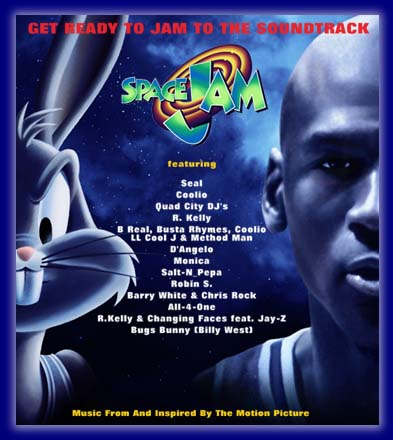
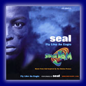
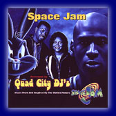
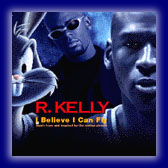
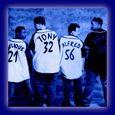

Trilha Sonora da Warner Sunset e Atlantic Records

| Artista | Música |
|---|---|
| Seal | Fly Like An Eagle |
| Coolio | The Winner |
| Quad City DJ's | Space Jam |
| R. Kelly | I Believe I Can Fly |
| B. Real, Busta Rhymes, Coolio, LL Cool J & Method Man | Hit 'Em High (The Monstars' Anthem) |
| D'Angelo | I've Found My Smile Again |
| Monica | For You I Will |
| Salt-N-Pepa | Upside Down |
| Robin S. | Givin' U All That I've Got |
| Barry White & Chris Rock | Basketball Jones |
| All-4-One | I Turn To You |
| R. Kelly & Changing Faces feat. Jay-Z | All Of My Days |
| Pernalonga (Billy West) | Buggin' |
Sons do filme para ouvir
Ouça alguns trechos de áudio de Space Jam sem sair da página. Clique de novo para parar.
"We need your HEEEEELP!" Pernalonga
"They're HUGE!" Pernalonga
Rugido dos Monstars Os Monstars
Curiosidade de 1996:
O site original tinha trechos de cada música para ouvir em AIFF, WAV ou RealAudio (para conexões de 14.4 e 28.8 kbps!). Uma loja vendia o CD por US$ 12,99 e a fita cassete por US$ 8,99, com um pôster de Michael Jordan e do Pernalonga de brinde. Os arquivos de áudio ficavam no site da Atlantic Records, que não existe mais.
Artistas em Destaque

Seal
"Fly Like An Eagle"
Depois do sucesso de "Kiss From a Rose" na trilha de Batman Eternamente (1995), Seal regravou o clássico da Steve Miller Band. Ele mesmo produziu a faixa, com D'Angelo nos teclados.

Quad City DJ's
"Space Jam"
A dupla Nathaniel "C.C. Lemonhead" Orange e Johnny "Jay Ski" McGowan, dos sucessos "Whoot (There It Is)" e "C'mon N' Ride It (The Train)", fez a música-tema do filme.

R. Kelly
"I Believe I Can Fly"
Convidado pessoalmente por Michael Jordan para criar o primeiro single da trilha, que virou a música mais lembrada do filme.

All-4-One
"I Turn To You"
Composta por Diane Warren e produzida por Jimmy Jam & Terry Lewis. O grupo estourou em 1994 com "I Swear", o single mais vendido daquele ano.
Frases do Filme
Os sons que o site de 1996 oferecia para baixar, agora direto na página. Clique para ouvir; clique de novo para parar.
"What's up, Doc?" O que é que há, velhinho? Pernalonga
"What do we care?" E a gente com isso? Pernalonga
"You were expecting maybe the Easter Bunny?" Estava esperando o Coelhinho da Páscoa? Pernalonga
Pernalonga explica a situação Pernalonga
"We need your HEEEEELP!" Precisamos da sua AJUUUUDA! Pernalonga
"They're HUGE!" Eles são ENORMES! Pernalonga
"Correction! We're Looney Tunes!..." Correção! Nós somos Looney Tunes!... Looney Tunes
"You guys are nuts." Vocês são malucos. Michael Jordan
"What's going on here?" O que está acontecendo aqui? Michael Jordan
"Smile, okay?" Sorria, tá? Stan Podolak
"We are taking you to our theme park in outer space..." Vamos levar vocês para o nosso parque no espaço... Nerdlucks
"You will be our slaves." Vocês serão nossos escravos. Nerdlucks
"Don't move a muscle!" Ninguém se mexe! Nerdlucks
"What are you lookin' at?" Tá olhando o quê? Monstars
Rugido dos Monstars Monstars